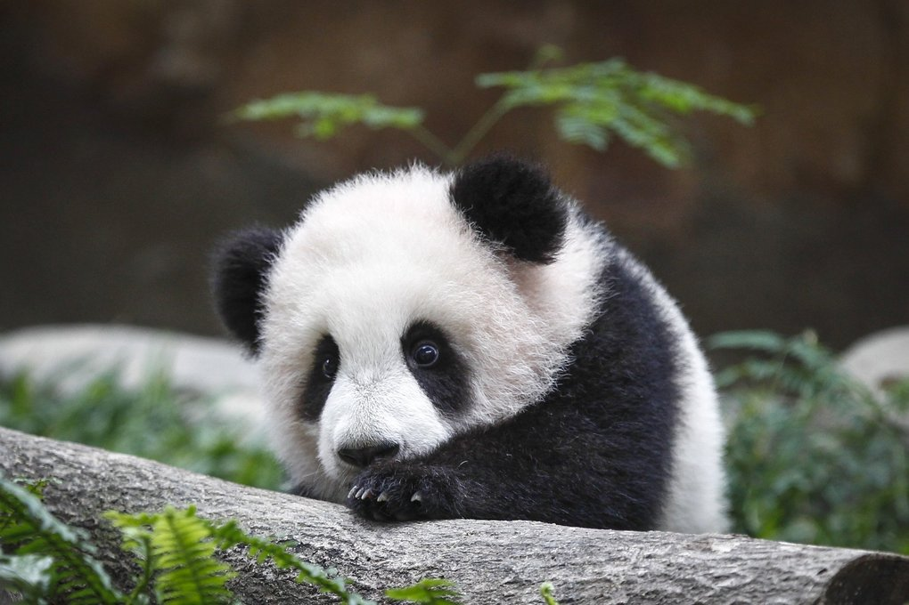
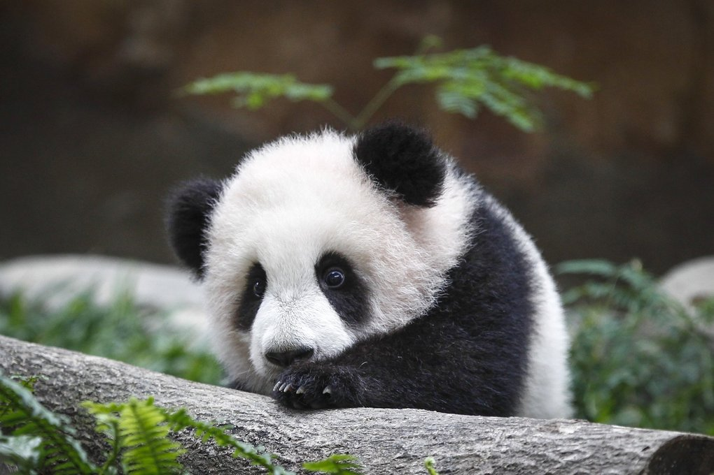

CSS Manipulation
Manipulating CSS Class Properties Using JavaScript
Click here for this topic's GitHub repository.
We're gonna manipulate this cute panda photo.

Manipulating CSS Class Properties Using JavaScript
Click here for this topic's GitHub repository.
We're gonna manipulate this cute panda photo.
